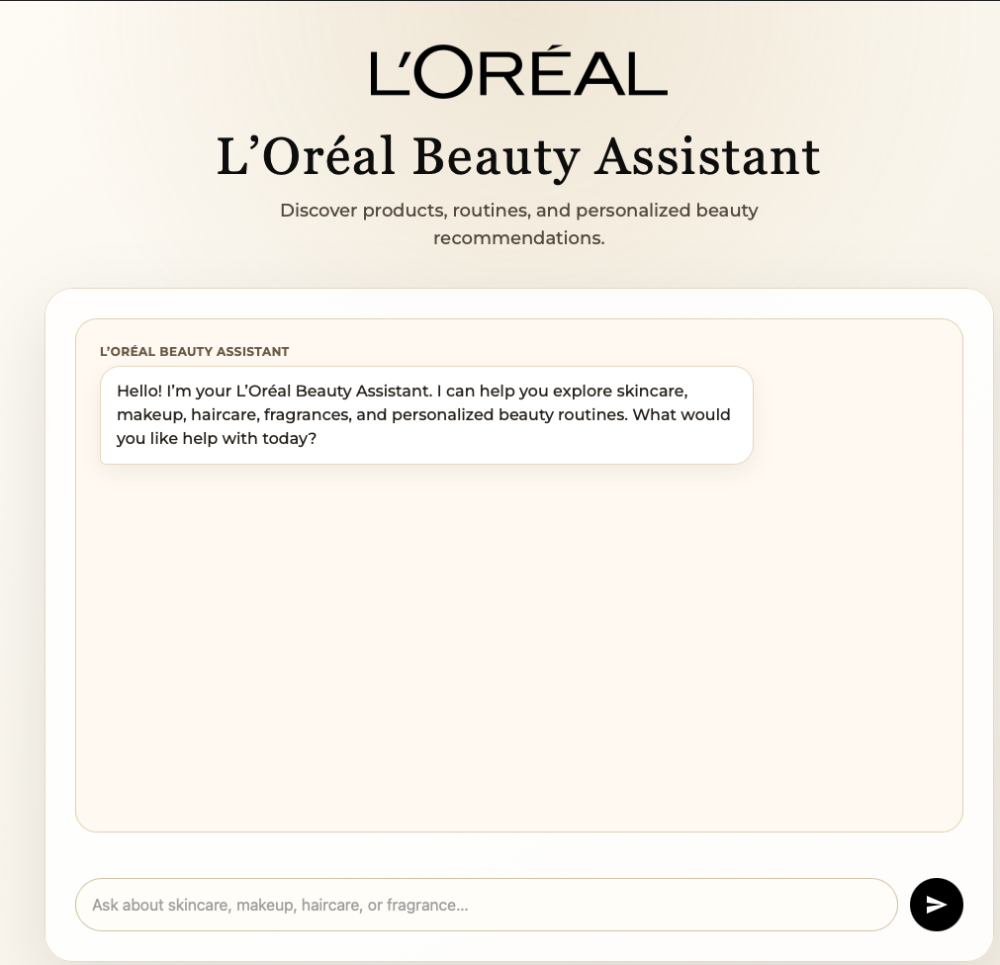
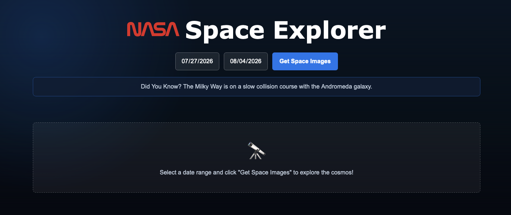
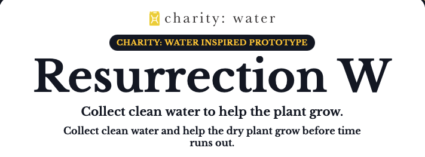

Hi, I'm Yi Yan Ho
Computer Science Student @ University of Maryland
Passionate about Software Engineering and AI. I enjoy building practical applications and turning ideas into real products.
View My Projects
Passionate about Software Engineering and AI. I enjoy building practical applications and turning ideas into real products.
View My ProjectsEnotrium | Washington, DC
May 2026 - Present
PolicyCON | United Kingdom, Remote
Sep 2025 - Mar 2026
Do Quantum | College Park, MD
Sep 2025 - May 2026
Department of Computer Science | George Mason University, VA
Jan 2025 - May 2025

AI-powered chatbot that provides personalized beauty recommendations using LLM integration, prompt engineering, and conversation management.
Learn More →
Interactive web application that retrieves and displays NASA’s Astronomy Picture of the Day using REST APIs with dynamic data fetching and error handling, asynchronous requests, and structured JSON processing.
Learn More →
Browser-based game featuring event-driven programming, game state management, scoring logic, and dynamic user interactions.
Learn More →Want to see more projects?
View All Projects →I am a Computer Science student at the University of Maryland interested in software engineering and AI. Through internships, applied research, and personal projects, I have gained experience building APIs, integrating AI services, and translating technical ideas into practical software.
I am currently seeking Software Engineering internship opportunities where I can contribute to meaningful products, collaborate with experienced engineers, and continue developing reliable and maintainable software.
yho5@terpmail.umd.edu
www.linkedin.com/in/yi-yan-ho
github.com/benson5112